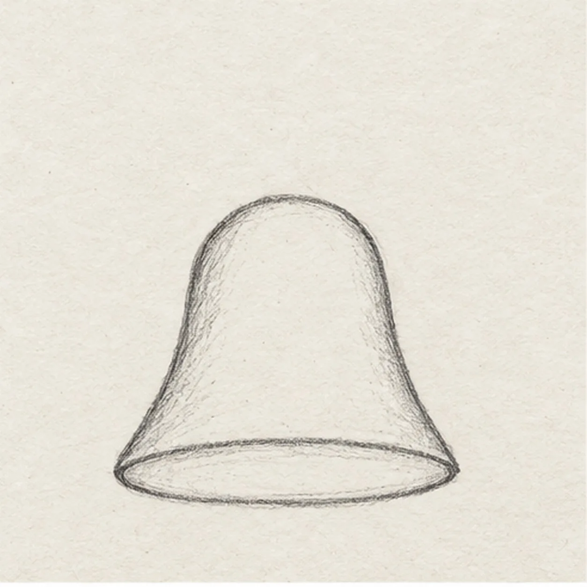
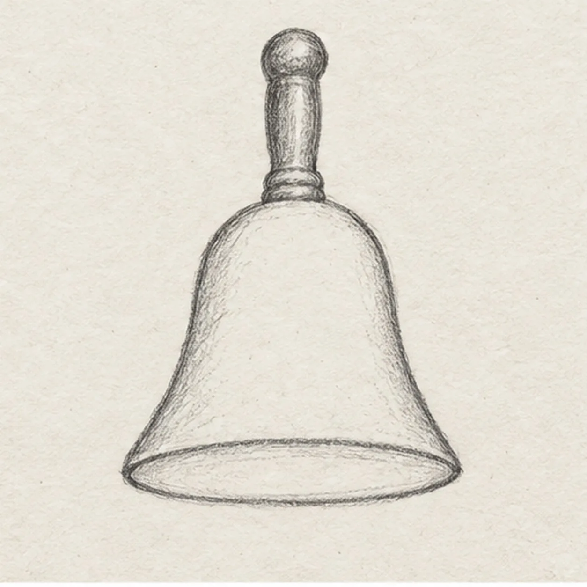
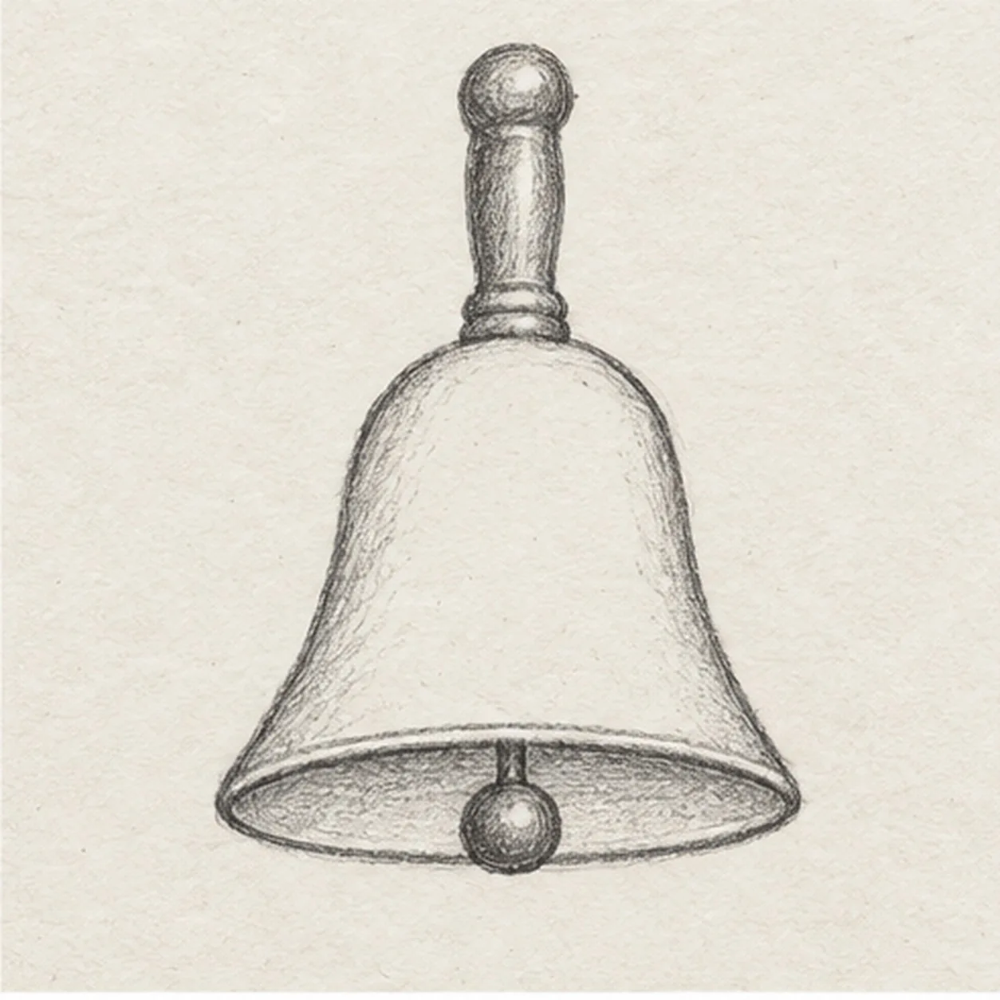
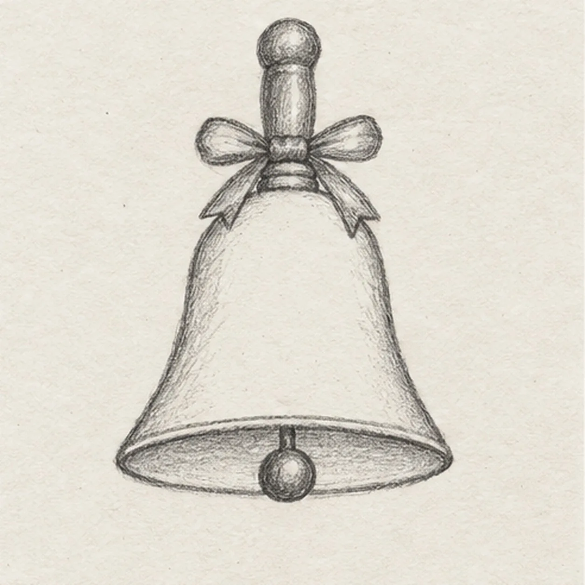
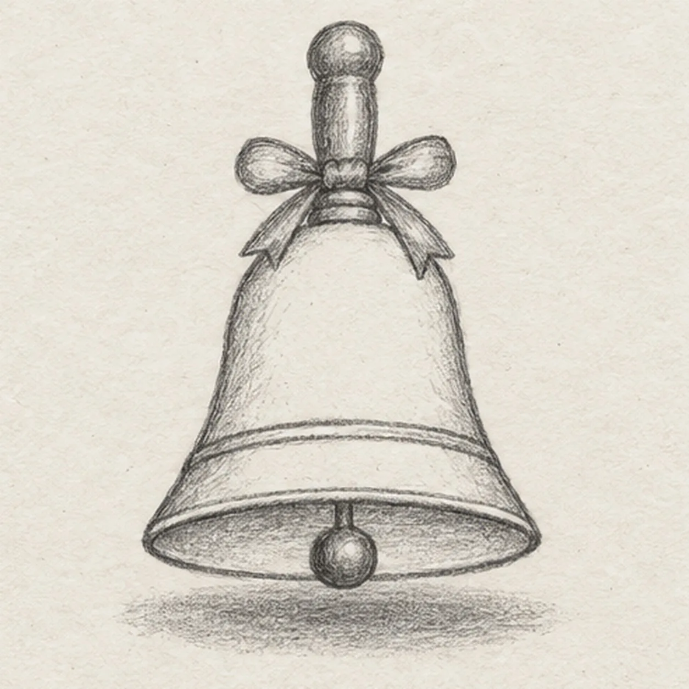

From the archive
Let's draw a small handbell
Treat this as one small practice round: build the subject lightly, notice the shapes, then darken only the lines that help the finished sketch.
-
01

Shape the bell
Draw the dome from a small top shoulder down to two broad sides, flare each side outward, then join the bottom with a shallow oval rim.
Sketch tip: Ghost both flared sides before touching down; compare their lower corners before closing the oval.
-
02

Attach the handle
From the bell top center, raise one short straight wooden grip and round its upper knob. Keep the dome and rim fixed.
Sketch tip: Trace the center from knob to rim with your finger before darkening the handle attachment.
-
03

Hang the clapper
Inside the lower oval, add a shorter back-rim arc and lightly shade the opening. Suspend one little round clapper on a straight central stem so its lower edge sits just below the opening.
Sketch tip: Keep the clapper centered and leave white space between it and both rim ends.
-
04

Tie a small ribbon
Wrap one narrow knot around the upper grip; draw one loop to each side and two short tails that stop above the bell shoulder.
Sketch tip: Draw the knot first and attach each loop to it; the two tails stop above the bell shoulder.
-
05

Mark brass and the surface
Add one gently curved engraved band just above the lower rim, then sketch one broken oval shadow under the clapper.
Sketch tip: Follow the bell curvature with the band and keep the broken shadow separate from the rim.
-
06
Shade the handbell
Layer warm brass over the established bell, brown on the handle and muted red on the tied ribbon. Deepen the existing rim, clapper, band, and shadow with graphite; preserve all earlier contours.
Sketch tip: Use the side of each pencil lightly so paper tooth and graphite remain visible.